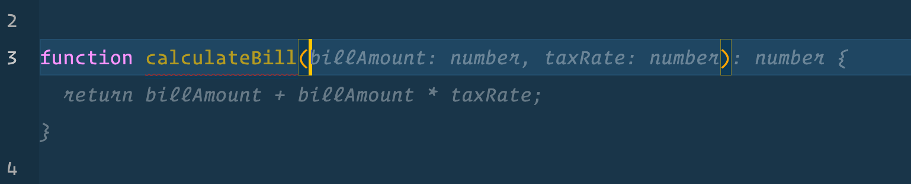
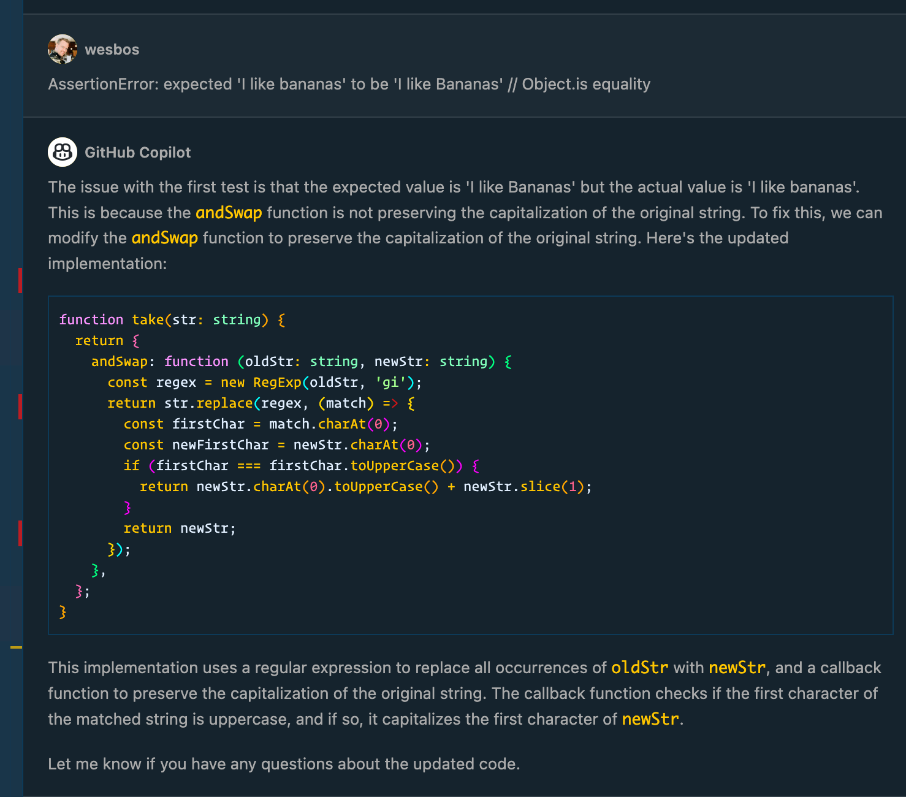
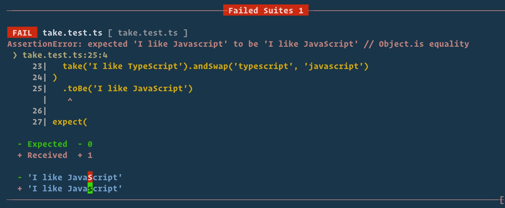
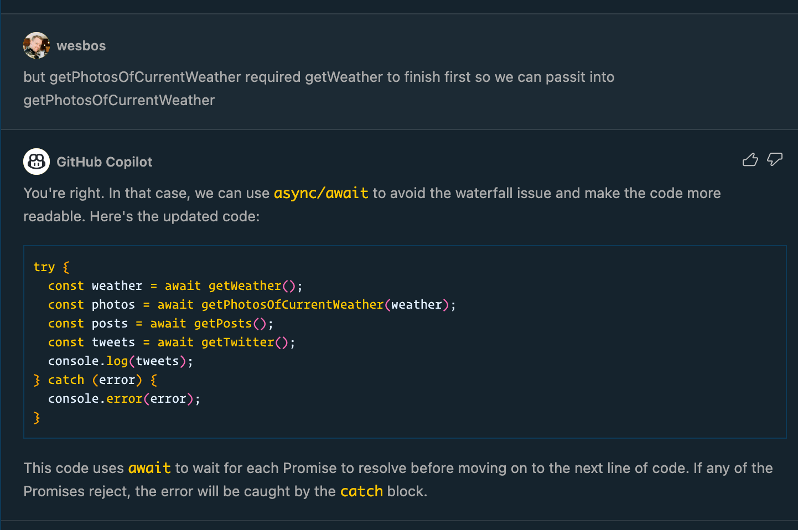
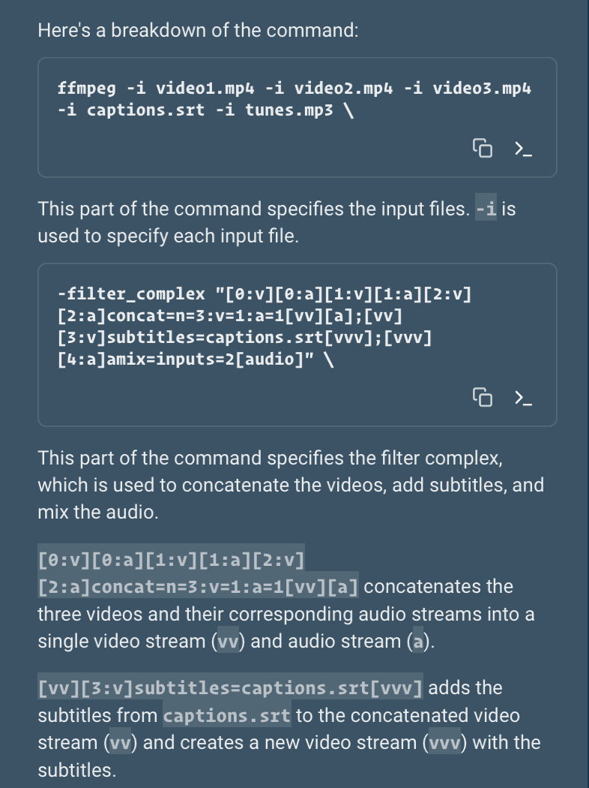
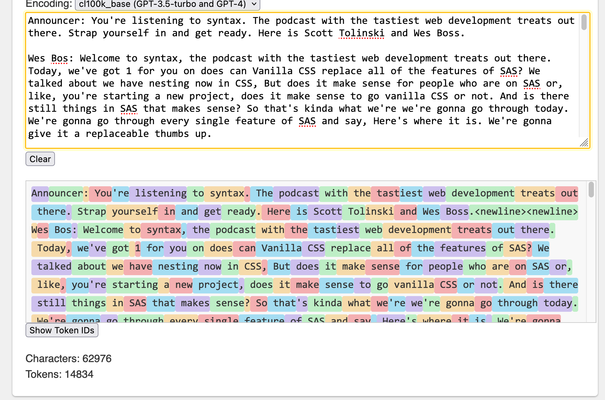
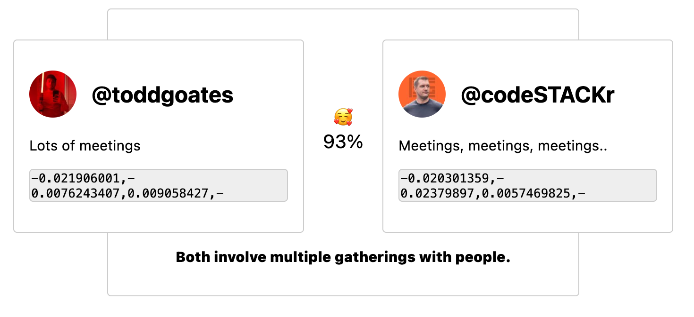

✨ AI
Hi, I'm
Wes Bos
Hamilton, On üá®üá¶. Also üá≥üá±
@wesbos
Web
Dev
Courses
+

syntax.fm × @syntaxfm × sentry
This is a talk about
coding with AI &
building things with AI
A few things
- I have nothing to sell
- I'm not some huckster
- Not a Web3 / Crypto guy changing lanes
- Just a enthusiastic web developer who find this stuff super handy!
- Skeptical? Good, me too. Let me show you the cool stuff.
AI gives developers a massive boost in productivity, code quality and what they are able to build.
We're still figuring a lot of things out - but I don't think it's going anywhere and it's not something to ignore.
Mediums
Places we can use AI to help us code
Ghost Code
 Amazon Code Whisperer
Amazon Code Whisperer
Codegeex
Replit Ghostwriter
CLI

Chat Apps
Pull Requests
So many Experiments...
- Voice - a 3rd input?
- Brushes - "Make accessible", "Document", "Add Types", etc..
- Prompts as a new Syntax / DSL
- Boilerplate generation
Why?
- It's faster than google
- It's context aware
- It solves your problem, not someone elses problem
Using AI to Code
How you can use AI in your day-to-day
Dummy Data
> Give me an array of people, each person has a first, last, and age
property.
Each person also has a nested array of 1-3
jobs, which have start date, optional end date, description and a
manager, who has the same properties as a person.
Generate
Types
Do the work
Make Reusable
> convert to a class based re-usable library with all best practices. I want to be able to pass in either selector strings or elements
Generate CSS
> I have this HTML.Write the selectors with nth-child so that each of the 10 items have random rotate values between -2 and 2. Use 2 decimal points and turns.
> Write tests for this regex
TDD
> Write the function that satisfies these tests

> Give Feedback on Errors
Not Perfect...
Flow Control
> Take this callback hell code
> convert to using promises
> convert to async + await
Falls Apart with Concurrency
It's really good at complex inputs
> ffmpeg command for merging three video files, overlaying captions and adding music from tunes.mp3
> Explain it to me
> Install these

I could show cool examples all day
✨
Let's look at how to integrate AI into your apps
> transcribe
(API)
What we want
Formatted as JSON please
Prompts
1 Hour Podcast = ~15,000 Tokens
1 hour podcast = 15,000 token input, 1,000 token output.
As with everything, it's a tradeoff between quality, speed and price.
| Model | Token Limit | Cost to summarize Podcast |
|---|---|---|
| GPT 3.5 turbo | 4,096 | 3¢ |
| GPT 4 turbo | 8,192 | 51¢ |
| GPT 4-32k turbo | 32,768 | $1.02 |
| Antropic Claude v1 | 100,000 ? | 48¢ |
| Antropic Claude v1 Instant | 100,000 ? | 8¢ |
> Craft The Prompt
> craft the request
> We get: title, description and topics
> Detailed Summary
> Tweets?
> Speaker Times
> Websites Referenced
Embeddings
How does it know about 600+ hours of transcripts?
It doesnt.
0.6¢ ($0.006) Per 1 hour episode, $2.88 for the entire syntax back catalog of 620 eps

Cosine Similarity, Euclidean Distance
Uses
- Search
- Classification / Tagging
- Grouping Items
- Anomaly detection
- Similar Images
- Related / Recommendations
Back to the Syntax Example
So, are we screwed?
Out of a job soon?
I don't know.
I don't think so
Here is what I think
AI gives us a massive boost in what we can do
What can we now make with our new super powers?
Technology isn't going to stand still
Less centering divs, more boundary pushing
We're Problem Solvers
Our tools are changing.
Don't ignore it. Stay sharp.
✌️
@wesbos